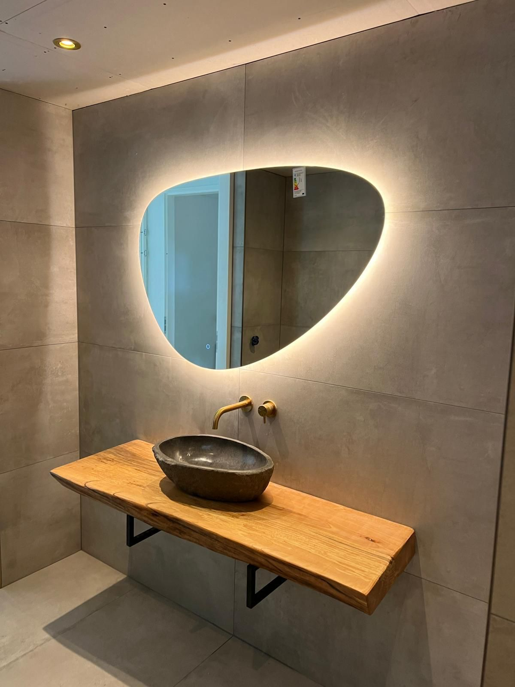

Sanitair
Een badkamer om elke dag in thuis te komen
Van tegels en badmeubels tot douchecabines en vrijstaande baden, in elke stijl en prijsklasse. Een complete nieuwe badkamer of één onderdeel vervangen: onze specialisten denken mee over indeling, kleur, materiaal en afwerking, en verzorgen ook de montage.